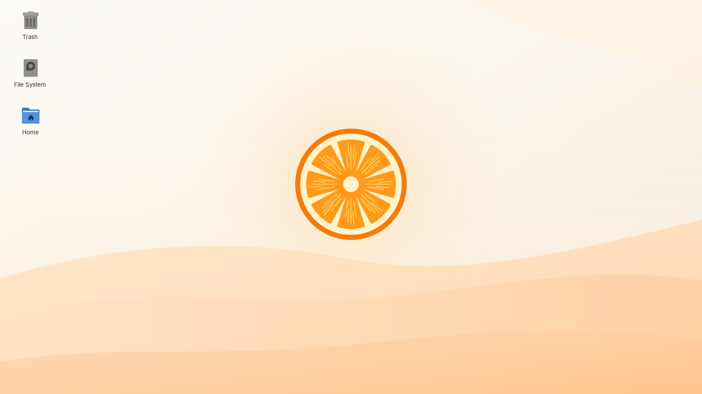
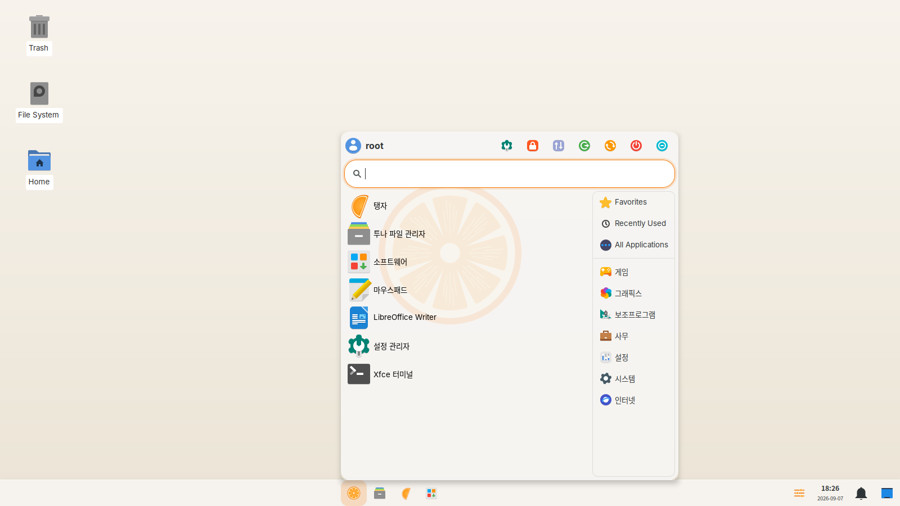
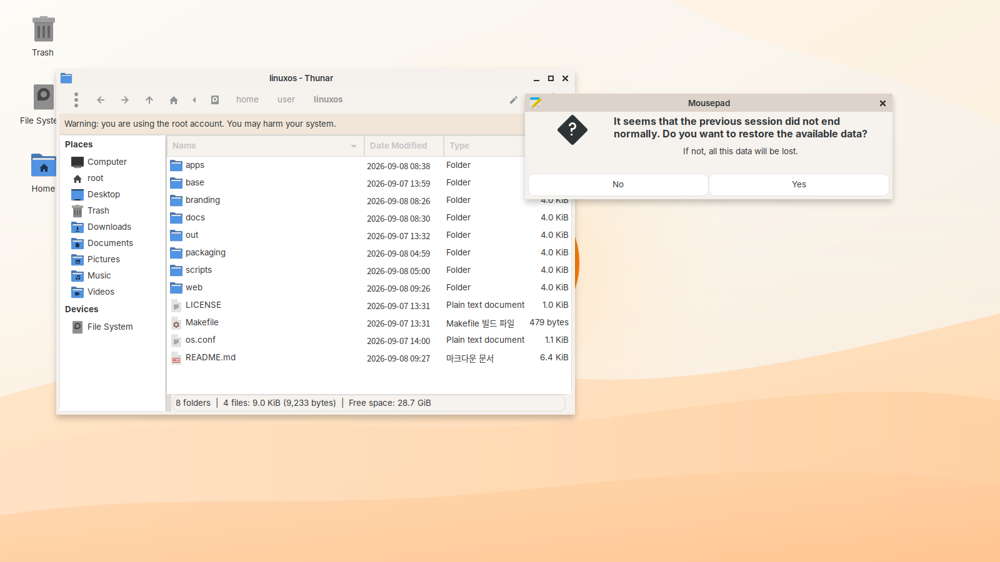
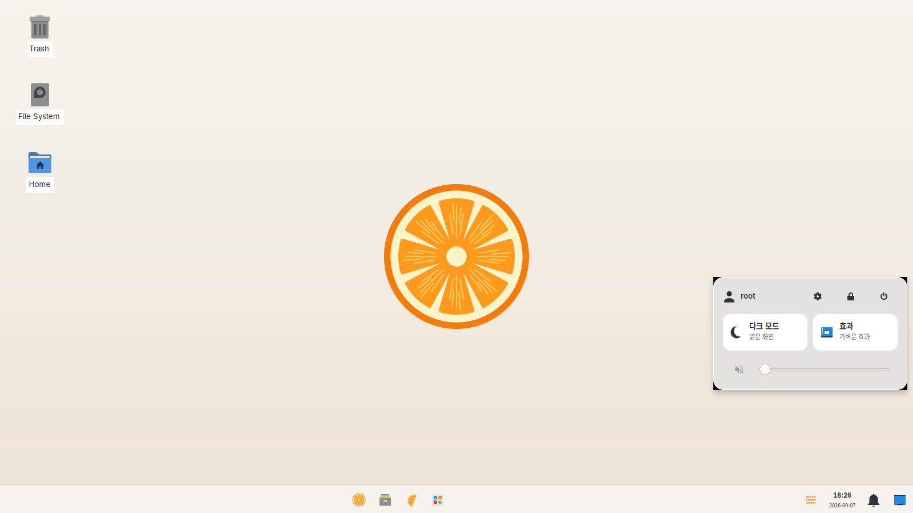
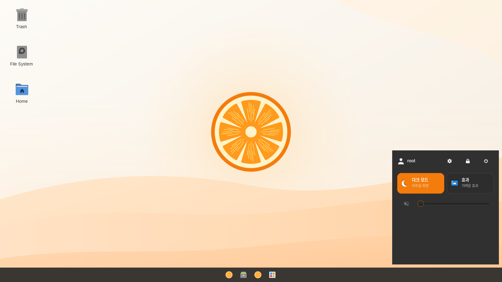

Feather-light, quietly secure, and familiar from the first click — for people leaving Windows behind, not their habits.
Fedora-based · version 0.2.0 “saebyeok” · 64-bit · free & open source
Why kiyu
kiyu is Fedora underneath — but tuned, trimmed, and dressed so it reads as instantly familiar while staying tiny and safe.
~570 MB idle, boots in about 38 seconds, and stays smooth on 2 GB of RAM with a dual-core chip and plain integrated graphics.
SELinux enforcing, an inbound-deny firewall, a hardened kernel, automatic security updates, LUKS disk encryption on install, and sandboxed apps.
A centered taskbar with a Start menu, Win+E / Win+D / Ctrl+Shift+Esc, a Windows-style file explorer, quick settings, and one-click dark mode.
Hangul input, Korean fonts, locale and time zone ready the moment you log in — no setup, no hunting through menus.
A proper Settings → Update screen: check, download, install, restart. kiyu ships its own updates through a signed repository, not by re-flashing.
One command sets up Steam with Proton, plus codecs and GPU drivers; another brings Wine for the odd .exe.
Browse anything, install anything — Flatpak, the software store, or the terminal. kiyu stays out of your way.
Screenshots





Taengja browser
Taengja is a WebKit browser that starts fast and respects you: trackers and cross-site cookies blocked, permissions denied by default, and a sandbox around every page. Tabs, bookmarks, history with address-bar autocomplete, downloads, and print — the basics done right.
Runs on almost anything
Download
Grab kiyu Imager for the computer you have now — it writes the kiyu ISO to a USB stick or SD card and verifies it. Then boot the new machine from that USB.
Prefer to bring your own tool? Download the kiyu ISO and write it with balenaEtcher or Rufus. Verify with the published SHA256SUMS.txt.
FAQ
Yes. kiyu is Fedora underneath, so you get its kernel, drivers, and security updates. kiyu adds a Windows-familiar desktop, its own apps, sensible defaults, and Korean support on top.
Web apps and cross-platform apps run natively. For Windows .exe software, kiyu sets up Wine; for games, Steam with Proton. Some titles and apps work better than others — it's not a guarantee, but most everyday software does.
Same base, stronger defaults: inbound-deny firewall, hardened kernel parameters, automatic security updates, disk encryption offered on install, sandboxed Flatpak apps, and a privacy-first browser.
No — it's an early release (0.2.1). It builds, boots, and runs, but hardware like Wi-Fi and GPUs still needs real-world testing. Try it on a spare machine or a USB stick first.